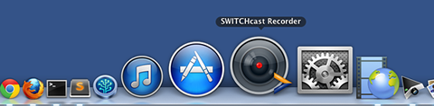
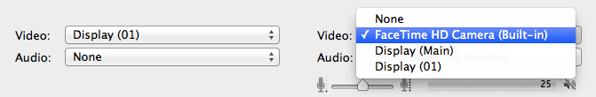

Prerequisites
- The SWITCHcast Recorder is installed on your computer
- All input sources are connected to your computer
Hey! Ho! Let's go
Open the SWITCHcast Recorder by clicking on the icon in your dock.

Choose the appropriate video and audio input sources.

Click on the 'Record' button to start the recording
- Click on the 'Start' button to begin with the recording
- Supervise the recording
- Once the recorded event has finished, click on the 'Stop' button
- Click on the 'Yes' button of the popup window to confirm the end of recording